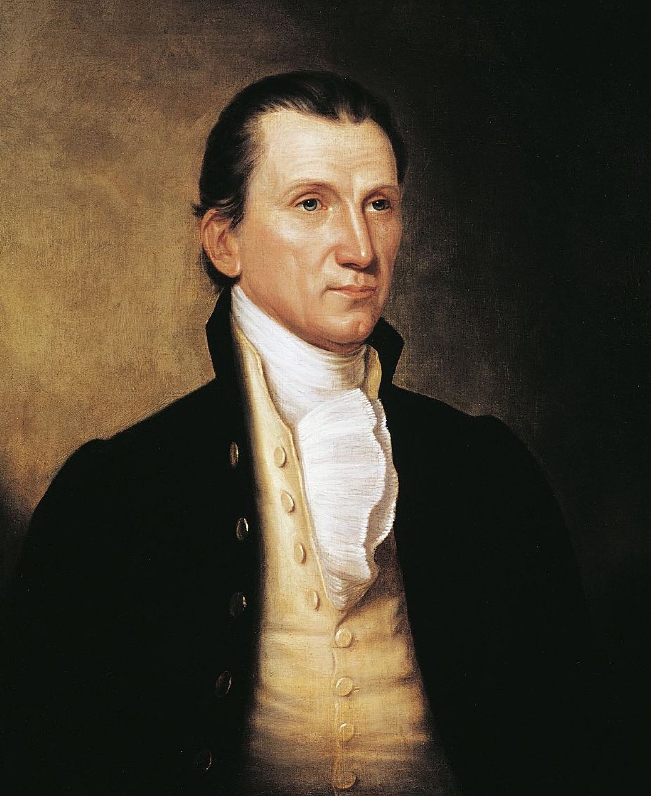

8. 托克维尔的预言：美国总统如何扩权？
大家好，我是杨照。
从美国的特殊经验，到人类的共通未来
在托克维尔写《论美国的民主》的时候，民主还是一件很新鲜的人类经验。我们今天看待民主的许多固定的意见，例如我们将民主当作是已经被证明有效的、正面的价值，或认为民主是人类发明过的政治制度当中相对缺点较少的一种，或者甚至更进一步地，我们因为现在的美国的情况而感觉到，民主也许也在它的实践当中，会产生各式各样的堕落或者是扭曲的各种不同的问题，这些在当时都还不存在，因为那是后来才发展出来的。
托克维尔《论美国的民主》，它的一项重大的意义，就是将原本是北美的英国殖民者，他们因应特殊历史、地理而设计出的权力安排方式，用一种普遍性、原理式的语言予以整理出来。这套方法固然有它理论上的来源，但毕竟有很大一部分必须按照北美殖民地的特殊条件，用trial and error（试误）的方式不断地调整。托克维尔比谁都更早，甚至在所有的美国人之前，将如此的trial and error（试误）所累积出来的美国经验，转变成为一套普遍原则。
托克维尔他并没有忽略美国的特殊性，所以在书里面他先介绍、先解释，民主为何、如何在美国出现。但他毕竟不是历史学家，他也就不是从纯粹的历史好奇心，史学的趣味跟意义的角度来看待这件事。他更关切的，毋宁是要在书中去彰示并且去提倡：民主是人类政治的未来。
托克维尔要对他的法国读者、欧洲读者表明：美国的民主经验，不是遥远大海的另一岸，一群清教徒莫名其妙去搞出来的，和法国和欧洲无关。
托克维尔在书里面解答了“民主与我何干”的重要问题。也是在这件事情上，不只是我们今天阅读《论美国的民主》，甚至在我们看到大家对于美国民主，不管是理论或现实上的认识跟理解，都值得我们回头问：民主与我何干？
民主跟你有什么样的关系？你会从什么样的角度，你会用什么样的方式，来思考、来回答这个问题呢？当然如果大家有什么样的想法，也非常欢迎在我们这一集的音频节目的留言当中，能够告诉我们，能够让我们大家一起来讨论。
托克维尔他的这本书的书名叫做《论美国的民主》，不过托克维尔他真正要对读者表白的，是：民主究竟是什么？为什么民主很重要？民主跟我们每一个美国以外的国家有什么样的关系，甚至跟我们的每一个人有什么样的关系？从民主在美国的来龙去脉讲起，但到书写完的时候，民主这件事情已经脱离了美国的特殊历史经验，成为人类共通的政治未来。
两次民主试验：法国与美国
美国立国之前，民主已经存在，不过主要是以思想跟理论的形式存在。最重要的，也就是孟德斯鸠在《论法的精神》书里面所提出来的看法。这部分可以请大家参考我们“10堂公民课”当中，其中第一堂为大家做的解释跟说明。点击收听>>
孟德斯鸠主张要用“监督制衡”的原则来取代绝对、独大的王权。孟德斯鸠他也设计了三权分立的架构，将行政权、立法权、司法权分别开来，让这三者彼此监督、彼此制衡。这个概念、这个架构，深深影响了美国的宪法。那关于美国的宪法，又要请大家参考“10堂公民课”当中的第三堂课，我在那套音频节目当中逐条为大家解读美国的宪法。点击收听>>
不过，孟德斯鸠的书里面并没有说明，要如何将政治权力的来源从由上而下改为由下而上，这是非常重要的一件关键之处。那这也是我们可以进一步地去思考，甚至试着对自己去描述，政治权力的来源，由上而下是怎么一回事，由下而上又是怎么一回事呢？
法国大革命还有它后续的动荡、变化，就让我们明白了，如果不能建立一套有效的、由下而上的权力机制，三权分立就没有办法发挥作用；或者扩大一点说，民主有很多复杂的环节，环环相扣，少了一环就无法正常地运作。
这么多环节，就没办法单靠思想、理论来设计，不管思想、理论出于多么聪明的脑袋，都不足以应付民主这种以“众人”为基础，管辖众人权力互动的机制。所以只有在现实里的试验，一点一点暴露出问题，一点一点修正改革，才有机会浮现出可操作、可运作的现实民主制度。
法国提供了一组试验，美国提供了另外一组。幸运的是，在法国试验明显失败的同时，还有美国的试验在进行，结果就试出了和法国很不一样的结果。
民主作为一项历史事实，早于托克维尔的著作；民主成了历史事实，托克维尔才有办法将他的著作建立在美国历史的基础上。不过，民主成为人类的普遍经验，乃至于人类抽象的政治未来，却不得不说是始自于托克维尔的论述。托克维尔以大量的资料、仔细的论证告诉大家：在美国已经出现了一种人类非常好的政治安排方式，值得每一个社会予以注意，予以借鉴。
为什么美国总统早期权力有限？
或许就是因为随时保持着来回于特殊与普遍，历史事实与抽象理论的这样的一种清醒眼光，托克维尔当时对于美国民主的理解异常精确，异常犀利。这尤其反映在他对于美国政治未来发展的预言上。
1830年代，托克维尔谈到了行政权，谈到了美国的总统，他就说——我们听听这一段话：在法理安排上，美国总统有很大的权力空间。那个时候，受到各州分权的限制，美国总统现实上的权力其实不大。但托克维尔他已经敏感地看出，美国总统角色存在着理论和现实的落差。
中文当中将President译作“总统”，统理一切，反映了这个字进入中文世界来得比较晚，那个时候美国的President已经取得了很大的权力。但18世纪革命年代，美国出现联邦的President，在字义上其实就可以看得出来，那是一个比较接近“会议主席”的角色，presiding over states，处理、协调州与州之间的关系，而不是国家权力集中之处。
但托克维尔他已经敏感地看出来，美国总统最重要的职务是外交，也就是在外交的领域里埋藏着美国总统巨大的扩权因素。外交是任何个别的州无法处理的，也是联邦存在最明确的功能。如果州有它自己的外交，那就不叫做州，而变成了国了。联邦将外交事务给统纳起来，统一解决与各州有关的外交问题。
19世纪初，现实上看，美国总统好像没什么事做，那是因为美国的外交事务很有限。美国和欧洲隔着海洋，也就隔着当时科技不发达情况底下的讯息时间落差。美国北边的加拿大还没有建国，南边的中南美洲情况不明，在地势力和殖民母国西班牙、葡萄牙陷入了长期征战当中，美国选择了站在一段距离之外观望的态度，要到1830年代之后，再改采要将中南美洲视为美国后院的“门罗主义”的态度。

詹姆斯·门罗（James Monroe，1758—1831），曾担任美国弗吉尼亚州州长、美国国务卿、美国战争部部长，1817年—1825年任美国第五任总统。在任期间提出“门罗主义”。图源网络。
还有另外一项限制：当时的美国在土地上是大国，然而在军事力量上却是个小国。美国宪法上规定，总统是联邦军队的最高统帅，19世纪初，这个最高统帅统领多大的军队呢？答案是六千人。这差不多是我们在中国一个陆军师的基本的规模。美国近邻没有强国，相对安全，没有什么威胁，自身的武力又很薄弱，也没有理由去介入、去干预其他国家，自然就采取了一种独善其身的立场。一个独善其身的国家，又会有多少外交事务要处理呢？
所以美国总统现实上没有什么事情干，国内跟国际的能见度都很低，在政治上相对边缘。于是在这样的一种现实状况底下，我们真的要佩服托克维尔，因为托克维尔就提醒：美国总统的权力大小，是和美国的国力成正比的。
外交，行政权的扩权方向
现在的美国是什么样的国力，我们回头也就看到，美国总统，尤其当美国的总统要处理外交事务的时候，他该有多大的权力！也是在这样的一个安排底下，当美国总统要扩权的时候，你知道他要怎么做？他就是把外交事务，甚至今天我们所看到的是与贸易相关的外交事务，无限地扩大。因为一旦这样的事务被扩大了、被拉高了，美国总统就有很大的空间可以运用个人的权力，有很大的个人独断的空间。这不就是今天在我们的周围，在我们的现实处境当中正在发生的事吗？
美国有条件地不断成长，而且一定可以成长得比欧洲旧国家要来得快。美国越强大，就越能够介入，也能够干预国际关系，也就有越多的外交事务，美国总统也就跟着越来越重要。换个方向来看，这时托克维尔就已经指出了，当上了美国总统的人，如果想要让自己能够拥有更大的权力，眼前随时都有诱人的选项。怎么样呢？他可以选择增进和美洲其他国家的关系，当美洲的老大哥；他也可以选择介入欧洲的事务，或跟随着欧洲国家和亚洲、非洲发生关系。
换成不一样的时代，我们也可以知道，这个句法继续推演下去，那就是：当上美国总统的人，如果想要让自己能够拥有更大的权力，他有这样诱人的选项，他就可以干预全世界各个国家之间的彼此互相关系，那他要如何干预呢？那就是不在政治的层次，而是在经济贸易的层次。这不就是今天关税问题被如此凸显，最重要的一个背后，我们说历史上就已经呈现的一种思考模式吗？
托克维尔写《论美国的民主》的时候，美国还是一个心态上非常封闭的国家，美国社会对外界有着非常强烈的排斥、拒绝，甚至有一种恐慌、害怕。然而，从那个时候开始，美国的确就如托克维尔所预言的，一路变得越来越大，越来越强。相应地，美国总统的权力也就一直不断地扩张。到20世纪中期，那就是第二次世界大战结束，冷战结构形成了。美国总统，不管选上的是一个什么样的人，都必然是全世界最有权力的两个人之一，当时只有苏共总书记——统领苏联的这一位领袖人物，拥有和美国总统同等的全世界影响力。再到了1980年代后期、1990年代前期，苏联瓦解了，于是美国总统就更成了全世界独一无二最高层的权力者。
比较视野下，外交给法国带来了什么？
托克维尔的准确预言，并不是单纯建立在对美国的研究跟了解上，更关键的是他的一份比较的视野。在他的眼中，美国的行政权发展，就和法国形成了强烈的对比。外交对美国联邦行政权来说，是最好的机会；但相对地，外交对法国行政权来说，却是最辛苦的挑战。为什么呢？法国有太复杂的外交关系，有很多的邻国，邻国发生的事都可以立即影响法国。除此之外，法国曾经是欧洲政治文化中心的历史，也就使得法国无法和错综复杂的欧洲事务拉开一段安全的距离。
法国既曾经有过路易十四的光辉，做为王政王权的典范，又曾经有过轰轰烈烈的大革命，被视为市民公民权利的代表。因而，宿命地，欧洲任何一个地方，不管是牵涉到王权，或者是牵涉到市民权，或者是牵涉到王权跟市民权之间的争执、冲突，都很容易就扯上了法国。法国政府不管是哪一种形态，不管是什么样的人来领导的政府，注定都要为外交事务而疲于奔命，甚至焦头烂额。想要从外交当中得到加分的机会非常渺茫，因为处理外交所引起的内外交煎、天怒人怨的可能性却很高。
为了要维系国家的存在，法国不能不保持在欧洲作为一个大国的地位；可是，大国地位带来的外交沉重压力，又很容易就可以压垮一个政府，毁掉一个政治人物。从这个角度来看，法国的行政权相对没办法这样扩张、膨胀，就只会在颠颠踬踬当中不断地受挫。
比较的就是什么？那就是：的确，从托克维尔写《论美国的民主》到今天两百年的时间，美国总统的权力一直不断持续地扩张，持续地膨胀。甚至我可以说，美国总统权力的扩张、膨胀，果真就足以构成另外一部绝对值得我们好好地看待、好好地思考的人类历史核心主题著作。
感谢您的收听，我们下次再会。